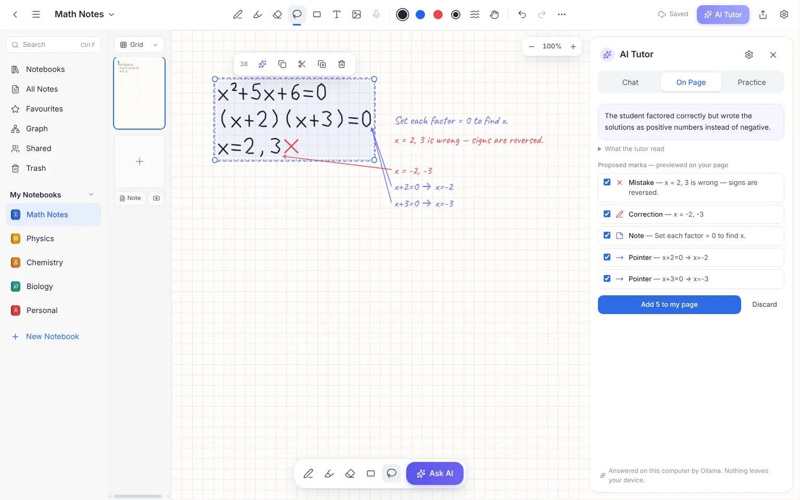

Write by hand. Get unstuck.
Inkling is a handwriting notebook for your computer. Circle your working and ask the AI tutor: it reads your handwriting, gives a hint or checks your steps, and shows corrections right on your page.
Inkling is in beta testing. When a version passes testing and is approved, it appears here.
Check back soon, or see the feedback page to get in touch.

Choose your computer
One file, straight from Inkling's official GitHub release. No sign-in needed.
Which Mac do I have? Apple menu → About This Mac. "Chip: Apple M1" (or M2, M3…) means Apple silicon. "Processor: … Intel" means Intel.
Install in about two minutes
This beta isn't code-signed yet, so you'll see a security prompt the first time. Signing is how Windows and macOS confirm who made an app. Without it, your computer can't verify the publisher and asks you to confirm.
Only install Inkling from this page or its GitHub release, and don't install it on a school- or work-managed computer without permission. If you're unsure, don't install it and ask us.
- Open the downloaded
Inkling-Setup-…-x64.exe(usually in your Downloads folder). - If you see "Windows protected your PC", click More info, check the file name and Unknown publisher, then click Run anyway.
- Inkling installs for your account only (no administrator password), adds Start menu and desktop shortcuts, and opens.
- Open the downloaded
Inkling-….dmgand drag Inkling into Applications. - Open Inkling from Applications. macOS says it can't verify the developer and won't open it yet. Click Done.
- Open System Settings → Privacy & Security, scroll to the message about Inkling, click Open Anyway and confirm with your password. You only do this once.
Checking a download, uninstalling, and help for younger users: full install guide.
What you need
| Windows | Windows 10 or 11, 64-bit. ARM PCs (Surface Pro X, Snapdragon laptops) run it through Windows' built-in emulation. |
|---|---|
| Mac | macOS 12 Monterey or later, on Apple silicon (M1 or newer) or Intel. |
| Internet | Only for the AI tutor and update checks. Notebooks work offline. |
| Pen or touch | Optional. A mouse or trackpad works too. |
| Phones and tablets | Not supported yet: no iPad, Android or web version. |
Private by design
- Your notebooks are saved on your computer as you write, with a backup every day. There's no account and no cloud storage.
- The AI tutor only sees what you ask about, after you click Allow. Please don't send personal information.
- The tutor is free, with about 10 answers a day per computer. AI answers can be wrong, so check them.
- Under 18? A parent or guardian should install Inkling and decide about the AI.
- No ads, analytics or tracking, in the app or on this page.
Privacy notice (draft, pending legal review)
Tell us how it went
It takes about 3 minutes and needs no account. Please describe what happened and don't include notebook contents or screenshots of personal notes.
In the app: Help → Send Feedback or Report a Problem. With a GitHub account you can also open a public issue.